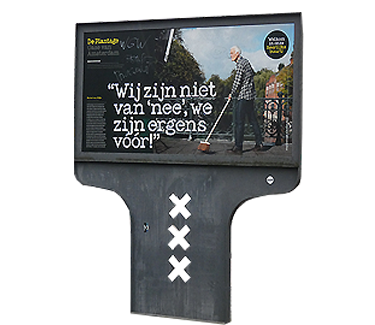

Wil je weten waar ze het echt groen doen. Dan ben je op de juiste plek. Je kan hier vinden hoe je mee kan helpen aan je omgeving en leren hoe we samen het milieu verbeteren. Denk aan groenere energie opties. Manieren om afval te verzamelen en plekken om ze te recyclen. Op deze website leer je hoe de Plantage in Amsterdam dat allemaal doet en je maakt kennis met de Groene Buurt.

Welkom!
Groene Buurt?
'De groene buurt' is van de plantage en bestaat uit meerdere gebieden in amsterdam (denk aan parken, restaurants, musea) die volledig milieubewust aan de gang gaan door het ondernemen van duurzamen initiatieven. De groene buurt en het Green Team activeren, motiveren en inspireren mensen om meer te doen voor het milieu of in ieder geval bewuster worden van hun omgeving. De groene buurt heeft meerdere initiatieven bezig waaronder het inkopen van alleen groene energie van het bedrijf GreenChoice, het verzamelen en recyclen van afval van de hele buurt en alle goederen gerecycled inkopen.